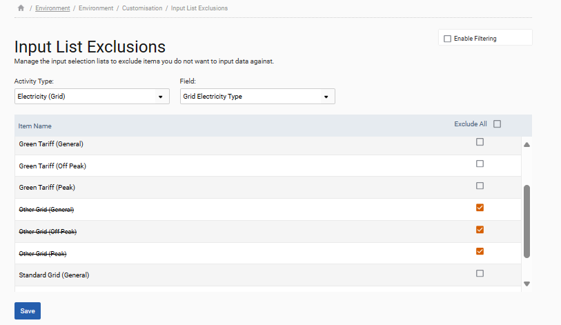
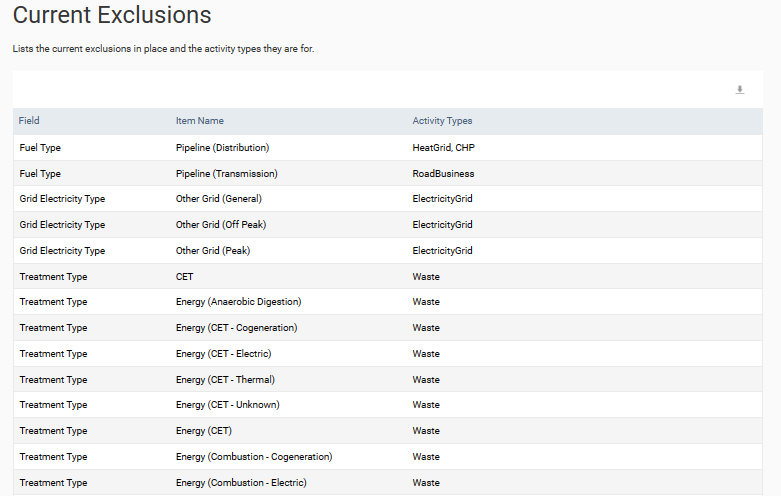

Users can limit the selection lists that appear in the ‘Input Form’ and what data can be uploaded using data templates or spreadsheets by using the ‘Input List Exclusions’ section via the ‘Environment > Settings’ menu.
The list can be tailored by selecting the relevant Activity Type and Field, checking the boxes next to the items that are to be excluded and subsequently clicking ‘Save’. Any excluded items can be included again by unselecting them here.

A full list of the current exclusions is displayed and can be downloaded at the bottom of the screen.
